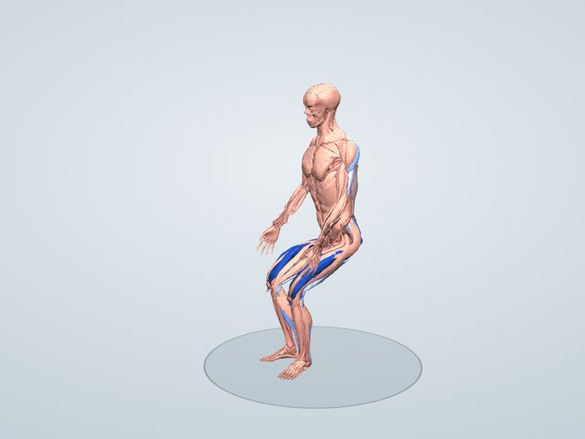

ストレッチ図鑑
ディープスクワット(しゃがみこみ)
かかとを床につけたまま深くしゃがみこみ、足首と股関節を一緒に伸ばすストレッチです。ふくらはぎの深部(ヒラメ筋)、お尻(大殿筋)、内もも(内転筋群)、腰の脊柱起立筋が伸ばされます。
一般に伸ばされる筋: ヒラメ筋・大殿筋・内転筋群・脊柱起立筋(腰)
3Dで動かして見る 無料で見られます

伸びる筋のしくみ
ヒラメ筋はふくらはぎの深いところにあり、膝を曲げた状態で足首を曲げる(すねを前へ倒す)と伸びます。深くしゃがむと足首が大きく曲がるので、かかとが浮きやすい人はヒラメ筋が硬い傾向があります。股関節を深く曲げることで大殿筋が伸び、ひじで膝を押し広げると内転筋群も伸ばされます。和式トイレのような姿勢がとりにくい人の柔軟性づくりに役立ちます。
伸びる筋(3Dモデルでの計算)
伸ばした姿勢で、それぞれの筋が関節の動きで伸ばされうる最大の長さを100としたときに、どこまで伸びているかの推定です。青い札の「+◯%」は、立った姿勢のときより筋が何%長くなったかです。
- ヒラメ筋(左右)+6.1%100
- 中間広筋(左右)+28.9%92
- 外側広筋(左右)+21.5%89
- 内側広筋(左右)+34.8%88
- 大内転筋(左右)+44%88
- 大殿筋(左右)+20.6%74
- 三角筋 肩甲棘部(後部)(左右)+24.1%71
- 中殿筋(左右)+34.9%69
やり方
- 足を肩幅より少し広く開き、つま先を少し外へ向ける
- かかとを床につけたまま、ゆっくり深くしゃがむ
- 両ひじを膝の内側に当て、膝を外へ押し広げる
- 背すじを伸ばし、30秒ほど保つ
かかとが浮くときは、つま先を少し外へ向けるか、かかとの下に薄い板を置きます。
ポイント
- 膝とつま先の向きをそろえる
- かかとを床から浮かせない
- 胸を張って背中を丸めすぎない
よくある間違い
- かかとが浮いてつま先立ちになる
- 膝が内側に入る
時間と回数の目安
30秒〜1分を2〜3回。毎日少しずつ続けると、しゃがめる深さが変わってきます。
やさしくする方法
柱や机の脚につかまってしゃがむ。かかとの下に薄い板やたたんだタオルを置く。
強く伸ばす方法
しゃがんだまま体重を左右にゆっくり移し、片側ずつ足首と股関節を深く曲げる。
注意すること
膝に痛みがあるときや、立ち上がるときにふらつくときは、何かにつかまって行ってください。
同じ部位のストレッチ
伸びる筋の割合は3Dモデルによる推定で、体格や柔軟性によって変わります。ストレッチは痛みのない範囲で行い、痛みやしびれが出たときは中止してください。持病やけががある人は、医師や専門家に相談してから行ってください。